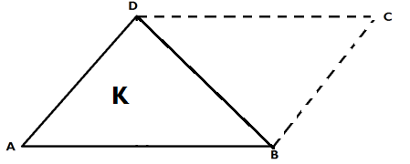
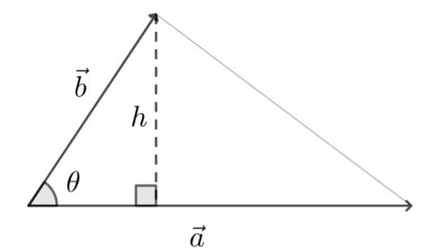
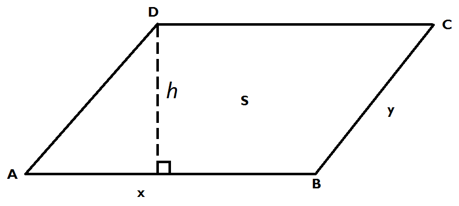
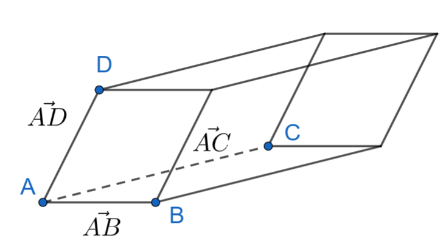
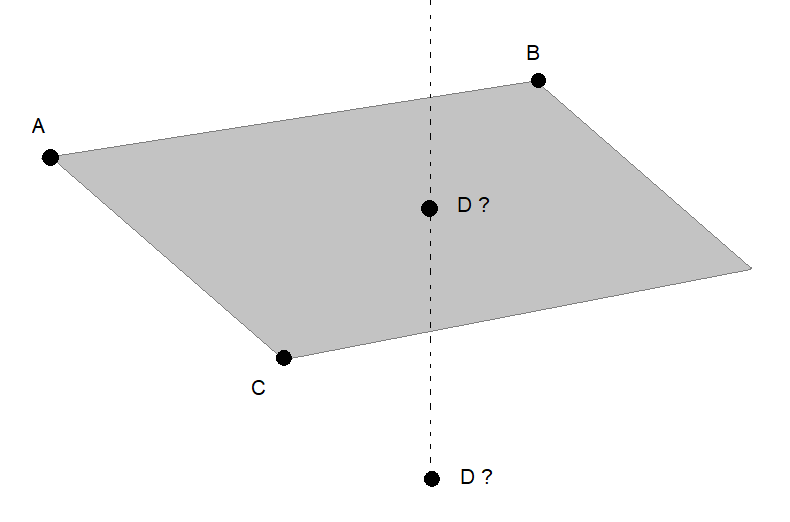

Geometriaa vektoreilla
Contents
Geometriaa vektoreilla#
Vektorien piste- ja ristituloa voidaan hyödyntää geometrisissa ongelmissa. Monet ongelmat toki ratkeavat ilman vektoreitakin. On helppoa laskea esimerkiksi suorakulmaisen särmiön muotoisen linnunpöntön tilavuus, jos sivujen pituudet ovat tiedossa. Vektoreilla onnistuu kuitenkin myös monimutkaisempia ongelmien käsittely. Kappaleista saattaa olla tiedossa vain kärkipisteet, ja kappaleet voivat sijaita kolmiulotteisessa avaruudessa muutenkin kuin koordinaattiakselien suuntaisina. (Toisaalta, olisikohan ilman vektorilaskentaa edes tarvetta tarkastella vinosti avaruudessa leijuvien linnunpönttöjen kärkipisteitä?)
Kolmion ja suunnikkaan ala#
Kerrataan aluksi, miten vinokulmaisen kolmion ala voidaan laskea. Jos kolmion kanta on pituudeltaan \(a\) ja kolmion korkeus (eli kohtisuora etäisyys huipulta kannalle) on \(h\), niin kolmion ala on \(A_k=\frac{1}{2}ah\).
Oletetaan, että tiedossa onkin korkeuden \(h\) sijasta kaksi vierekkäistä sivua \(a\) ja \(b\) sekä niiden välinen kulma \(\theta\). Tällöin korkeusjana \(h\) rajaa suorakulmaisen kolmion, jolle voidaan käyttää suorakulmaisen kolmion trigonometrisia funktioita.

Kulmalle \(\theta\) voidaan kirjoittaa: \(\sin{\theta}=\frac{h}{b}\), josta voidaan ratkaista \(h=b \sin{\theta}\). Kun tämä sijoitetaan edelliseen pinta-alan laskukaavaan, saadaan tulos:
\(A_k=\frac{1}{2}a b \sin{\theta}\).
Laskukaava näyttää melkein samalta kuin aiemmin opeteltu ristitulovektorin pituuden kaava. Nyt voidaankin kolmion sivut ilmaista vektoreina kuvan mukaisesti:

Vektoreita \(\vec{a}\) ja \(\vec{b}\) kutsutaan kolmion sivuvektoreiksi. Sivuvektorit ovat sellaisia vektoreita, jotka lähtevät samasta kärkipisteestä muihin kärkipisteisiin. Jos kolmiosta on tiedossa kärkipisteet, niin sivuvektorien kantavektorien kertoimet muodostetaan vähentämällä yhden kärkipisteen koordinaatit muiden kärkipisteiden koordinaateista.
Edelliseen laskukaavaan riittää nyt vaihtaa lukujen \(a\) ja \(b\) paikalle vektorien \(\vec{a}\) ja \(\vec{b}\) pituudet:
\(A_k=\frac{1}{2}|\vec{a}||\vec{b}|\sin{\theta}\).
Aiemmassa luvussa todettiin, että \(|\vec{a} \times \vec{b}| = |\vec{a}||\vec{b}| \sin{\theta}\), joten kolmion pinta-ala voidaan kirjoittaa myös muodossa
\(A_k=\frac{1}{2}|\vec{a} \times \vec{b}|\).
Esimerkki
Kolmion kärkipisteet ovat \(A=(0.5,2), B=(1.5,0.5), C=(3.5,1.5)\). Laske kolmion ala.
Ratkaisu
Valitaan sivuvektoreiksi \(\vec{AB}=(1.5-0.5) \vec{i} + (0.5-2) \vec{j} + 0 \vec{k}=\vec{i} -1.5 \vec{j} + 0 \vec{k}\) ja \(\vec{AC}=(3.5-0.5) \vec{i} + (1.5-2) \vec{j} + 0 \vec{k} = 3 \vec{i} -0.5 \vec{j} + 0 \vec{k}\).
Kolmion ala on
\(\begin{equation}\begin{split} A_k & =\frac{1}{2} \begin{Vmatrix} \vec{i} & \vec{j} & \vec{k} \\ 1 & -1.5 & 3 \\ 3 & -0.5 & 0 \end{Vmatrix} \\ & = \frac{1}{2} |[1\cdot (-0.5)-3\cdot (-1.5)] \vec{k}|\\ &= \frac{1}{2} |4 \vec{k}|= \frac{1}{2}\cdot 4 = 2 \end{split}\end{equation}\)
Huomaa kahdet itseisarvomerkit taulukon ympärillä. Sisemmät merkit kuvaavat ristitulon laskemista, uloimmat kuvaavat ristitulosta tulokseksi saadun vektorin pituutta.
Edellisen kuvan mukaiset sivuvektorit \(\vec{a}\) ja \(\vec{b\)} määrittelevät täsmällisesti tietyn kolmion, sillä kolmion kolmas sivu saadaan näistä vektoreista laskemalla \(\vec{a}-\vec{b}\). Itse asiassa samat kaksi vektoria määrittelevät myös suunnikkaan. Suunnikkaassahan on kaksi paria samansuuntaisia sivuja, eli kahta vastakkaista sivua voi kuvata samalla vektorilla. Seuraavan kuvan perusteella todetaan, että suunnikkaan ala muodostuu kahdesta symmetrisesti asetellusta kolmiosta, joiden sivuvektorit ovat samat kuin suunnikkaan erisuuntaisia sivuja vastaavat vektorit. Näin ollen suunnikkaan ala on
\(A_s=2 A_k = 2 \cdot \frac{1}{2}|\vec{a}||\vec{b}|\sin{\theta}=|\vec{a}||\vec{b}|\sin{\theta}\).

Esimerkki
Erään suunnikkaan kärkipisteiden koordinaatit ovat \(A=(1,1.5), B=(3,1.5), C=(4,3), D=(2,3)\). Laske suunnikkaan pinta-ala.
Ratkaisu
Valitaan sivuvektoreiksi \(\vec{AB}=(3-1)\vec{i}+(1.5-1.5)\vec{j}=2\vec{i}\) ja \(\vec{AD}=(2-1) \vec{i}+(3-1.5) \vec{j}=\vec{i}+1.5 \vec{j}\). Kolmialkioisiksi täydennettynä vektorit ovat \(\vec{AB}=2\vec{i}+0\vec{j}+0\vec{k}\) ja \(\vec{AD}=\vec{i}+1.5\vec{j}+0\vec{k}\).
Suunnikkaan ala on
\(\begin{equation}\begin{split}|\vec{AB}\times\vec{AD}| & =\begin{Vmatrix} \vec{i} & \vec{j} & \vec{k} \\ 2 & 0 & 0\\ 1 & 1.5 & 0 \end{Vmatrix} \\ & = |(0\cdot 0-0\cdot 1.5) \vec{i}-(2\cdot 0-1\cdot 0)\vec{j}+(2\cdot 1.5-0\cdot 1) \vec{k}|\\ & =|3 \vec{k}|=3 \end{split}\end{equation}\)
Huomautus
Ristitulovektori on aina kohtisuorassa molempia ristitulon laskussa käytettyjä vektoreita vastaan. Niinpä \((x,y)\) -tasossa olevien vektorien ristitulo on aina \(z\)-akselin suuntainen. Tämä voidaan perustella yleisesti:
\(\begin{equation}\begin{split} |\vec{a}\times\vec{b}| & =\begin{Vmatrix} \vec{i} & \vec{j} & \vec{k} \\ a_x & a_y & 0\\ b_x & b_y & 0 \end{Vmatrix} \\ & = (a_y\cdot 0 -b_y \cdot 0) \vec{i} - (a_x \cdot 0 -b_x \cdot 0) \vec{j} + (a_x b_y - b_x a_y) \vec{k} \\ & = (a_x b_y - b_x a_y) \vec{k} \end{split}\end{equation}\)
Siis \(xy\)-tasossa olevien kolmioiden sivuvektorien ristitulovektorilla on vain yksi komponentti. Jos kolmio sijaitsee avaruudessa vinossa, ei siis esimerkiksi pöydän pinnalla vaan siten, että kärjet ovat eri korkeuksilla, niin ristitulovektorissakin voi olla useampi komponentti.
Suuntaissärmiön tilavuus#
Tilavuuksia voidaan laskea ns. skalaarikolmitulon avulla. Jos \(\vec{a}, \vec{b}\) ja \(\vec{c}\) ovat vektoreita, niin skalaarikolmitulo määritellään \((\vec{a}\times \vec{b}) \cdot \vec{c}\). Ensin siis lasketaan kahden vektorin ristitulo, ja sitten tämän vektorin ja kolmannen vektorin pistetulo. Kuten pistetulosta yleensäkin, niin tässäkin laskun lopputuloksena on luku (=skalaari) eikä vektori.
Tilavuuslaskuissa \(\vec{a}, \vec{b}\) ja \(\vec{c}\) ovat suuntaissärmiön sivuvektoreita, eli vektoreita suuntaissärmiön jostakin nurkasta muihin nurkkiin. Skalaarikolmitulosta tuloksena voi tulla positiivinen tai negatiivinen luku. Tilavuudet voivat kuitenkin olla positiivisia. Suuntaissärmiön tilavuus onkin skalaarikolmitulon itseisarvo.
Skalaarikolmitulollakin on monenlaisia laskusääntöjä (Wikipedia), joista monet voidaan karkeasti tulkita niin, että kun lasketaan kolmen vektorin skalaarikolmituloa, niin ei ole juurikaan merkitystä sillä, mitkä kaksi vektoria valitaan ristitulon laskemiseen. Tilavuuslaskuissahan vektoreita voi ajatella esimerkiksi laatikon sivusärminä. Kaksi näistä rajaa laatikon pohjan, kolmas taas määrittää korkeuden. Laatikon tilavuus on sama riippumatta siitä, miten päin laatikko on.
Esimerkki
Oheisessa suuntaissärmiössä kärkipisteiden koordinaatit ovat \(A=(1,1,1), B=(5,1,2), C=(3,7,4)\) ja \(D=(2,2,9)\). Laske kappaleen tilavuus.

Ratkaisu
Valitaan sivuvektoreiksi \(\vec{AB}=4\vec{i}+0\vec{j}+\vec{k}\), \(\vec{AC}=2\vec{i}+6\vec{j}+3\vec{k}\), \(\vec{AD}=\vec{i}+\vec{j}+8\vec{k}\). Huomionarvoista on, että neljä pistettä ja kolme vektoria todella riittävät määritellään kyseisen kappaleen yksikäsitteisesti.
Lasketaan skalaarikolmituloa \((\vec{AB}\times \vec{AC})\cdot \vec{AD}\) varten ristitulo \(\vec{AB}\times \vec{AC}\):
\(\vec{AB}\times\vec{AC}=\begin{vmatrix} \vec{i} & \vec{j} & \vec{k} \\ 4 & 0 & 1 \\ 2 & 6 & 3 \end{vmatrix}= \vec{i}-10\vec{j}+24\vec{k}\).
Skalaarikolmitulo, eli kappaleen tilavuus, on
\((\vec{AB}\times \vec{AC})\cdot \vec{AD}=(-6 \vec{i}-10 \vec{j} +24 \vec{k})\cdot (\vec{i}+\vec{j}+8\vec{k}) \)
\(= -6\cdot 1-10\cdot 1+24\cdot 8=176\).
Lasku onnistuisi WolframAlpha-komennolla: ([4,0,1}*[2,6,3]).[1,1,8] jossa alkuosa ([4,0,1]*[2,6,3]) laskee kahden sivuvektorin ristitulon, ja loppuosa .[1,1,8] laskee ristitulovektorin ja kolmannen sivuvektorin pistetulon.
Esimerkki
Osoita, että pisteet \(A=(1,1,1)\), \(B=(2,-2,0)\), \(C=(-1,2,-2)\) ja \(D=(-9,11,-9)\) ovat samassa tasossa keskenään.
Ratkaisu
Mitkä tahansa kolme pistettä kuuluvat keskenään samalle tasolle. Aloitetaan yksinkertaisemmasta esimerkistä: piirrä paperille kaksi pistettä mihin tahansa kohtiin. On olemassa yksi ainoa suora, joka kulkee kummankin pisteen kautta. Nämä pisteet ja kyseinen suora voivat sijaita myös kolmiuloitteisessa avaruudessa (tällöin sinun pitää nostaa paperi pois pöydältä ja kallistaa sitä). Piirrä paperille kolmas piste, joka ei sijaitse kahden muun pisteen kautta kulkevalle suoralle. Nyt voit piirtää jommasta kummasta aiemmasta pisteestä suoran tämän uuden pisteen kautta. Nämä kaksi suoraa määrittävät nyt tason, ja siten kuuluvat keskenään samalle tasolle.

Voidaan siis valita mitkä tahansa kolme pistettä, esimerkiksi \(A\), \(B\) ja \(C\), jotka varmasti ovat samassa tasossa. Riittää selvittää, kuuluuko myös piste \(D\) tälle samalle tasolle. Nyt pisteiden \(A\), \(B\) ja \(C\) määräämää tasoa voidaan ajatella “laatikon pohjana” ja tällöin piste \(D\) määrittää “laatikon katon” korkeuden. Piste \(D\) on pohjan tasolla, jos laatikon korkeus on nolla. Laatikon korkeus taas on nolla, jos laatikon tilavuus on nolla.
Muodostetaan siis annetuista pisteistä suuntaissärmiön määrittävät vektorit:
\(\vec{AB}=\vec{i}-3\vec{j}-\vec{k}\),
\(\vec{AC}=-2\vec{i}+\vec{j}-3\vec{k}\)
\(\vec{AD}=-10\vec{i}+10\vec{j}-10\vec{k}\)
Lasketaan ristitulo \(\vec{AB}\times\vec{AC}=10 \vec{i} + 5 \vec{j} - 5\vec{k}\)
Pistetuloksi \(\vec{AB}\times\vec{AC} \cdot \vec {AD}\) saadaan \(10\cdot (-10)+5\cdot 10 + (-5) \cdot (-10)=-100+50+50=0\)
Suuntaissärmiön tilavuudeksi tuli nolla, joten kaikki pisteet sijaitsevat samassa tasossa.